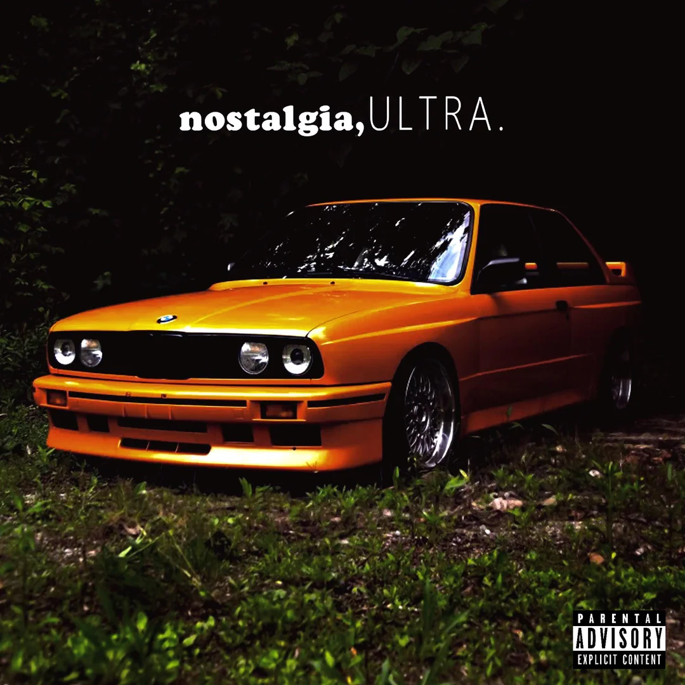
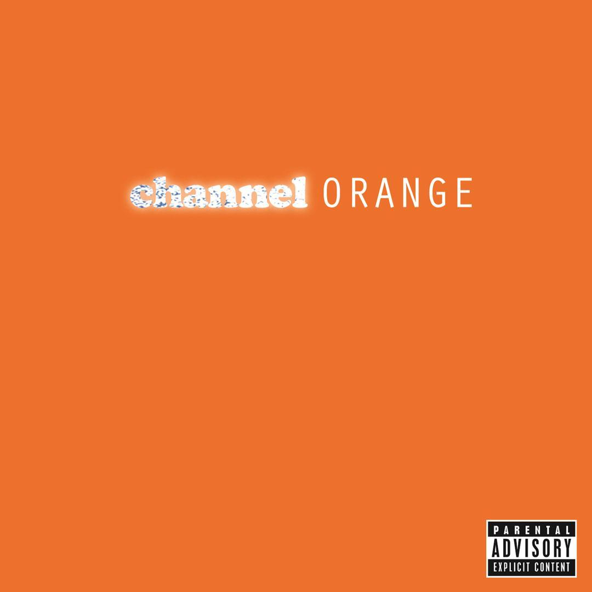
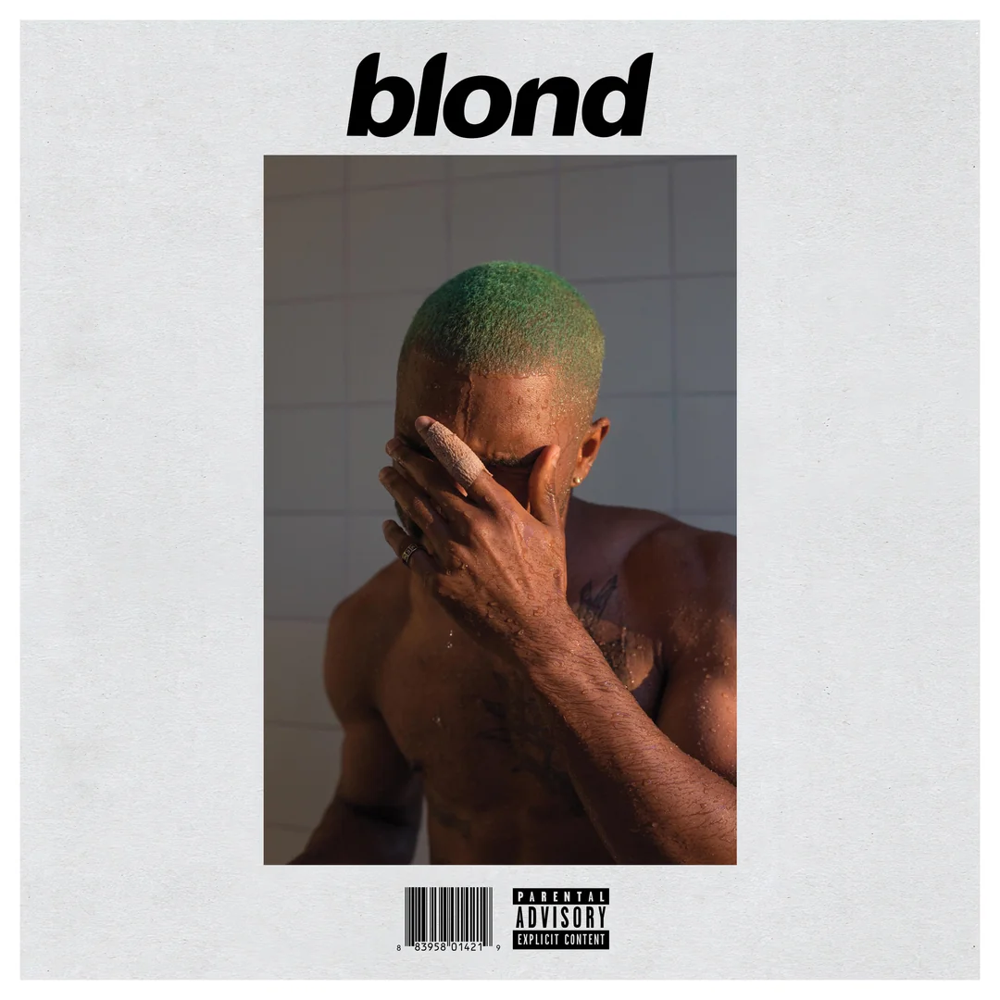

nostalgia, ULTRA.
Mixtape • 2011Frank Ocean's debut mixtape that introduced his songwriting and distinctive sound to the world.
MUSIC
Projects
Singles
Features
Archive Entries

Frank Ocean's debut mixtape that introduced his songwriting and distinctive sound to the world.

A landmark R&B album that established Frank Ocean as one of the defining artists of his generation.

Released one day before Blonde, marking the end of Frank's Def Jam contract.

A critically acclaimed record celebrated for its emotional depth and experimental production.
Singles, Features and the Unreleased Archive are currently being documented.